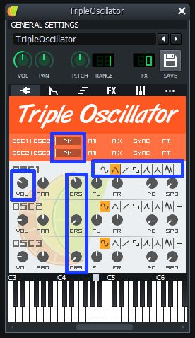
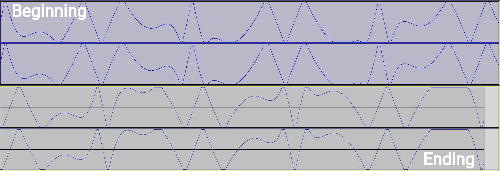
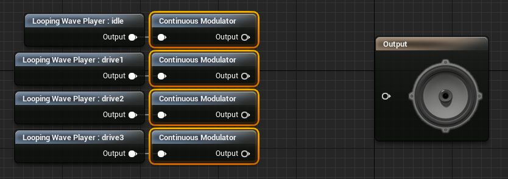
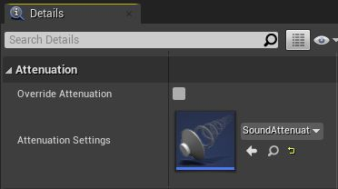
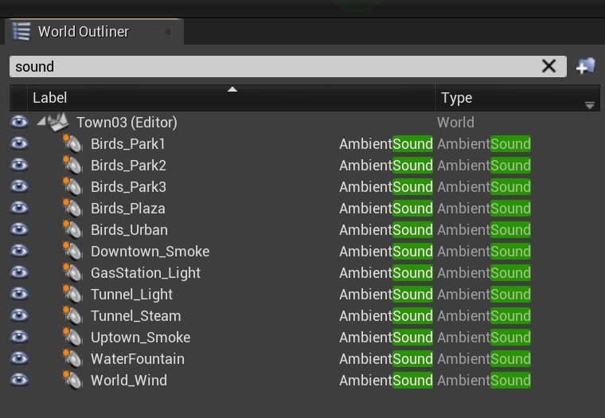
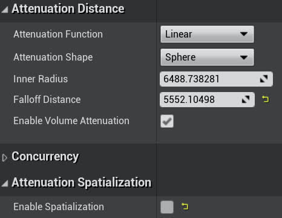
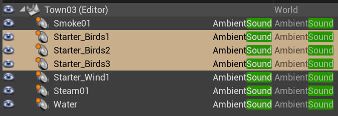
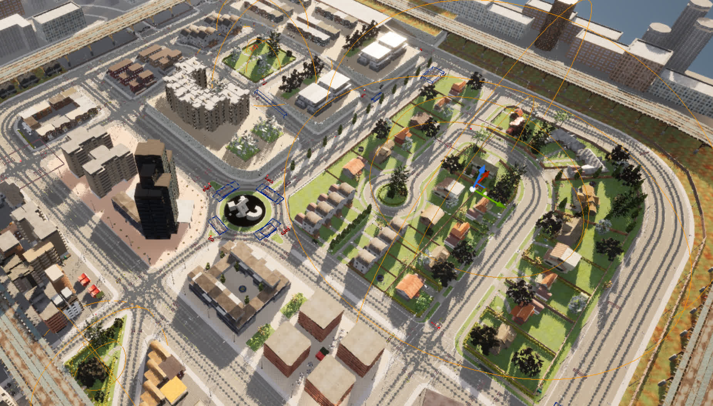
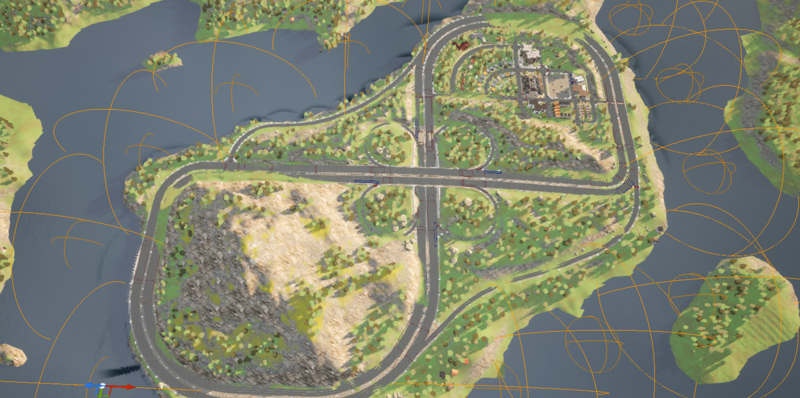

在 Carla + DReyeVR 中添加和使用声音
试用 Carla（所有版本）时，您可能首先注意到的一件事是模拟器中完全没有声音。然而，就我们的目的而言，我们力求为用户提供沉浸式体验，并向用户提供有关世界的大量反馈，而声音是添加这种体验的好方法。
在本文档中，我们将介绍如何添加以下声音：
发动机转速
对于用户使用油门来说，最好的反馈机制之一是发动机转速增加时发出的轰鸣声。
- 是的，我们知道，我们为我们的自主车辆使用了特斯拉模型，但却给它配备了发动机/齿轮噪音......亵渎！
致谢
本节大部分内容来自 YouTube 上这个非常有用的指南 ，该指南也 以文章的形式提供 。我们强烈建议您查看它以获取以下步骤的分步说明和视觉效果。
创造声音
（如果您已经有引擎所需的声音文件，请跳过此步骤）
- 下载所需软件：
-
创建 4 种声音，分别对应发动机怠速 (1)、缓慢运转 (2)、正常运转 (3) 和以最大转速运转 (4)
-
对于所有这些曲目，我们将从单个 TripleOscillator 播放恒定的 C2 八度（4 个节拍应该就可以了）开始。
配置 视觉 PM value for OSC1+OSC2 PM value for OSC2+OSC3 OSC1 volume of 60 OSC1 CRS of -4 OSC1 to use triangle wave OSC2 CRS of -24 OSC3 CRS of -24 图片来源： ContinueBreak  -
然后，我们要通过在 FX-Mixer 窗口添加 LMMS 类型的放大器来放大这种效果，并将音量调到最大。
-
这适用于怠速发动机声音，这里无需执行其他操作。其余驱动声音将逐渐增加其 CRS 值。
-
对于 Drive1，将 OSC1 CRS 更改为 0，将 OSC2 CRS 更改为 -20，将 OSC3 CRS 更改为 -20。
-
对于 Drive2，将 OSC1 CRS 更改为 2，将 OSC2 CRS 更改为 -18，将 OSC3 CRS 更改为 -18。
-
对于 Drive3，将 OSC1 CRS 更改为 2，将 OSC2 CRS 更改为 -16，将 OSC3 CRS 更改为 -16。
-
您可以随意调整声音，这些是前面提到的 指南中推荐 的数字
-
将所有声音导出
.wav并确保启用“导出为循环”以消除结束静音。
在 Audacity 中循环播放声音
（如果您的曲目已经连续循环，请跳过此步骤）
- 下载所需软件
-
将每个音轨单独导入 Audacity（我们将一次导入一个音轨）
-
循环播放时，你可能会在每次重复时听到突然的啪啪声，这是由于波的不连续性造成的
-
我们要找到声音开始/结束的位置，并确保波大致匹配，以便在重复之间有连续的过渡。
-
这可以通过从头开始寻找模式并从音轨上切掉最少部分来实现，这样音轨一结束，新的模式就可以适应。  图片来源： ContinueBreak
-
将所有音轨剪切为无缝循环后，将它们导出到新的.wav，然后就可以放入 UE4 中并用作车辆噪音了。
在 UE4 中使用声音
-
有了我们所需的所有曲目，我们会将它们全部导入引擎（内容浏览器中的大导入
Import按钮） -
创建 SoundCue 资产（在内容浏览器content browser ->“声音” Sounds ->“SoundCue” 单击鼠标右键）
i. 在编辑器中打开 SoundCue 蓝图资产（打开新窗口）
a.将所有音轨导入蓝图，并勾选 “循环” **"Looping"** 复选框ii. 将连 续调制器 Continuous Modulator 节点连接到循环波播放器的每个输出
a. 这些连续调制器的参数定义了这些音轨的输入/输出范围（最小值/最大值） b. ** **注意** 所有参数都有相同的名称 `"RPM"` ，保持一致非常重要，因为它将在 `C++` 代码中使用
-
图片来源： ContinueBreak
-
这些是指南中推荐的参数值
参数 Idle Drive1 Drive2 Drive3 名字 RPM RPM RPM RPM 默认 1 1 1 1 Min Input 0 20 500 2200 Max Input 200 600 2800 5700 Min Output 0.65 0.8 1.25 1.9 Max Output 1.1 1.0 1.25 1.9 Param Mode Absolute Absolute Absolute Absolute -
添加具有 4 个参数的 Crossfade by Param 来处理输入/输出转换
-
这些连续调制器的参数定义了如何处理过渡（每个音轨的淡入/淡出）
-
这些是指南中推荐的参数值
参数 Idle Drive1 Drive2 Drive3 淡入 RPM 值开始 0 150 550 2290 淡入 RPM 值结束 0 350 750 2340 淡出 RPM 值开始 200 600 2300 5800 淡出 RPM 值结束 400 800 2350 5800 Volume 1.0 0.6 0.6 0.6
-
-
-
最后，你可能需要某种衰减装置来消除远处物体的噪音
-
创建声音衰减 Sound Attenuation 资产（在内容浏览器
content browser-> 声音Sounds-> 声音衰减SoundAttenuation单击鼠标右键）-
将内半径 Inner Radius 改为1500
-
将衰减距离 Falloff Distance 改为 3000
-
-
返回步骤 2 中的 Sound Cue 资产，在“详细信息” Details 窗格中向下滚动并使用新创建的声音衰减 Sound Attenuation 资产作为其衰减设置：

- 图片来源： [ContinueBreak](https://continuebreak.com/articles/generating-setting-basic-engine-sounds-ue4-part-12/)
其他车辆声音
一般来说，添加声音可能会像上面一样复杂，或者对于某些快速的事情来说它们可以非常简单。
-
例如，添加换档（gear shifting）声音就简单得多：
-
我们只需要导入一个干净的（允许的）
.wav文件即可创建 SoundWave 实例 -
然后我们可以直接从 Ego-Vehicle 中播放该 SoundWave 资产
-
类似地，添加 转向信号（turn-signals）的声音本质上是相同的
-
只需导入声音，在代码中找到它们，然后在我们想要的事件上播放它们
要了解我们如何在 DReyeVR 中实现音频组件（针对自主车辆以及基准 CarlaWheeledVehicle），请查看 EgoVehicle.h 和 CarlaWheeledVehicle.h
世界中的环境噪声
让世界上的环境噪音根据与声源的距离而衰减也是可行的（并且相当容易）。
作为参考，我们提供的 Town03 有这样的声音提示： 
请注意，将声音拖放到世界中后，请确保启用“覆盖衰减” Override Attenuation 复选框，以便您可以编辑衰减函数、形状和半径。
-
内半径 Inner Radius 表示体积最大化的区域
-
衰减距离 FallOff Distance 表示衰减函数执行和淡入/淡出的区域
我们针对世界上简单的环境噪声的一般策略遵循以下基本规则：
-
风是普遍存在的，所以总是有一个覆盖整个地图的大框，即
Starter_Wind05，通常我们将其默认音量设置为70 % -
鸟类是绿地/树木/郊区的指示器，所以通常哪里有绿地，我们就添加一个
Starter_Birds01区域 -
烟雾是工业/城市/建筑物的良好指标，因此通常在建筑物/市中心较多的地方，我们会使用
Starter_Smoke01 -
蒸汽非常适合地下/肮脏的环境，因此隧道/铁路非常适合
Starter_Steam01 -
只要场景中有水，水就非常有用（水
Water），但最好保持 3D 声音处于启用状态 -
即不要取消选中“启用空间化”
Enable Spatialization（这样鸟儿的声音才能完全在这个区域内听到）
要自定义调整衰减参数，请在生成 AmbientSound 实例后查看“详细信息” Details 窗格。还建议参阅 有关音频衰减 Audio Attenuation 的虚幻引擎文档
| 衰减参数设置示例 | 已选择鸟叫声 |
|---|---|
|  |  在 World Outliner 中，只需搜索“Sound”即可返回所有 AmbientSound 实例 |
作为参考，Town03 的鸟类环境噪音如下所示：  很难看到表示衰减球体的橙色线，但所有三条线都被选中并显示（通常覆盖所有草地）。
我们还添加了其他自定义声音，例如轻微的水花声（与中间的喷泉配合良好）。
此外，有些地图被水包围，这带来了挑战，因为海岸线通常非常弯曲，只有当声音足够普遍，能够从一般水体发出时，保持 3D 声音空间化才有效。这对于水对称的喷泉非常有效，但需要在世界中更精细地放置环境声音，如下所示（Town04）：

将这些更小、更精细的声音组件放置在世界上更加繁琐，但它们可以带来更好的体验，并且编辑起来相对较快（只需复制、粘贴和移动）。
注意
可能有更好的方法（例如 音频样条线audio splines ）来做到这一点，这样我们就不需要放置一堆小声源。